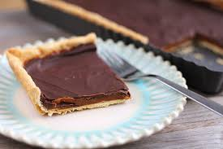

Avannete (masa sable)(Torta de geografia)

Ingredientes
Harina 250g (2 tazas)
Azúcar impalpable 100g
Manteca 150g
Yemas 3
Esencia de vainilla 1 cucharadita
Sal 1 pizca
Procedimientos
Procesadora
Precaliente el horno a 320F
Todos los ingredientes secos y la manteca en la batidora
Esperar a que se haga una mezcla granulada
Añadi las yemas y la esencia de vainilla, mezla por 1 minutos
Meterla en papel film, aplastala y metela en la heladera por 30 minutos
Pone la masa en un molde circular, y arma los bordes
Cocinar en horno precalentado a temperatura media a alta (190 °C), de 30 a 35 minutos aproximadamente.
Sacar del horno y dejar enfriar.
Agrega el Dulce De Leche adentro del molde.
despues derreti el chocolate y usalo para cubrir el Dulce de Leche.
Poner en la heladera hasta que este frio.